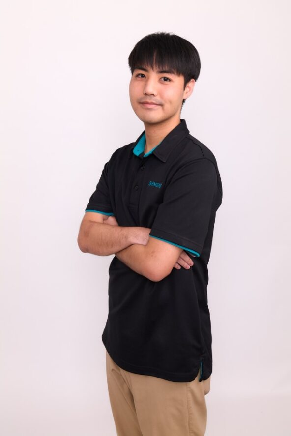

"Hello"
I'm Thaworapong Plamit
Operation Control System Engineer
About Me
My name is Thaworapong Plamit, and I am currently a Control System Engineer at Siemens Mobility. I have experience in the design, configuration, and testing of Operation Control Systems (OCS) for international railway projects. I am now looking for new opportunities in different roles, particularly in development (dev) or DevOps. This is the first webpage I have created for my portfolio. Feel free to take a look and explore my experience.
Key Projects
KVDT2 Project, Malaysia

W2QP PTO 3rd Main Project, Auckland, New Zealand

OBL-PNR Generator adding project, Auckland, New Zealand
CRL C8 New Market project, Auckland, New Zealand
CRL Rail9000 Panel Changes Operations Control System, Auckland, New Zealand
CRL W2QP–WIRI Stage 6, Auckland, New Zealand
Contact
 Thaworapong Plamit
Thaworapong Plamit
 094-845-1919
094-845-1919
 thaworapong.p@gmail.com
thaworapong.p@gmail.com